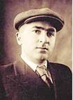
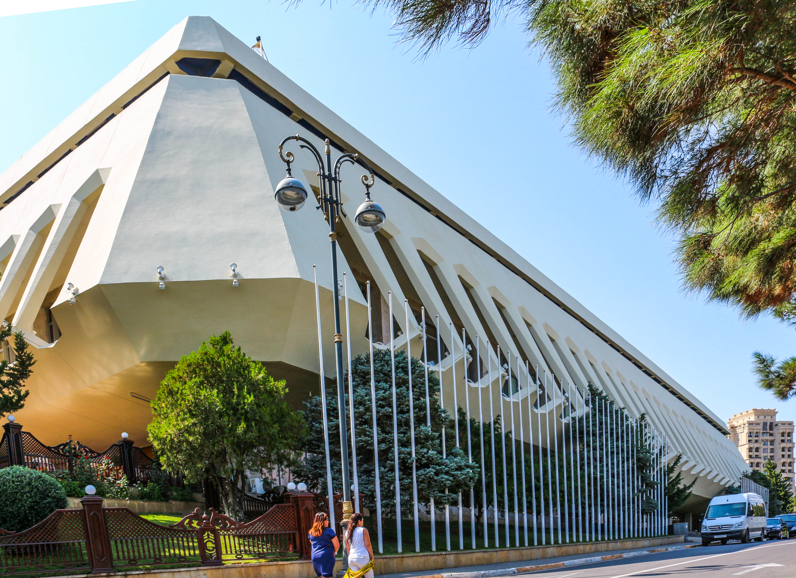

Alish Lambaranski
Heyati:Eliş Cemil oğlu Lemberanski ( azeri : Eliş Cemil oğlu Lemberanski ; 23 may 1914 - 1 may 1999 ) — Sovet və Azerbaycan dovlet xadimi və Bakı meri .
1964-cü ildə o, Moskvada Mikrobiologiya Sənayesi Baş Ofisinin mühüm bir iş üzrə müavini təyin edildi .
1960-cı illərdə Bakıda ən davamlı problemlərdən biri mənzil çatışmazlığı idi.
1969-cu ildə Heydər Əliyev Respublikanın qubernatoru oldu və Lemberanskiyə Respublikada tikinti işlərinə rəhbərlik etməyi təklif etdi. Vəziyyəti dəyişdirmək və mənzil problemlərini həll etmək üçün Lambaranski güclü, peşəkar şəhər rəhbərlərindən ibarət komanda topladı və tezliklə mənzil problemini həll etmək üçün bir plan hazırladı. Onun planı kommunal xidmətlər və oyun meydançaları olan "mikrobölgələr" yaratmaq idi. O, həmçinin Bakının izdihamlı küçələrini genişləndirdi, səs-küylü köhnə tramvayları trolleybuslar və motorlu avtobuslarla əvəz etdi. Yeni tikinti üçün yer açmaq məqsədilə köhnə, birmərtəbəli binalar söküldü.
İkinci Dünya Müharibəsi başlayanda o, könüllü olaraq cəbhəyə yollanmış, Rostov uğrunda gedən döyüşlərdə ağır yaralandıqdan sonra Bakıya qayıtmışdır. Müharibədən sonra neft sənayesinin bərpasında göstərdiyi xidmətlərə görə "Stalin mükafatı" ilə təltif olunmuşdur. 1950-ci illərin sonunda onun həyatında yeni bir dövr başlamış və o, Bakı şəhərinin rəhbərliyinə gətirilmişdir.
Yaradıcılığı və Bakı üçün xidmətləri
Əliş Ləmbəranskinin yaradıcılığı dedikdə, Bakının müasir simasını formalaşdıran nəhəng memarlıq layihələri nəzərdə tutulur. O, təkcə bir məmur deyil, həm də şəhərini canı dildən sevən bir qurucu idi. Onun rəhbərliyi dövründə Bakı özünün "qızıl dövrünü" yaşamışdır. Onun ən məşhur layihələri və yaradıcılıq irsi: Bakı Bulvarı və "Kiçik Venesiya": Ləmbəranski İtaliyadan ilhamlanaraq bulvarda su kanalları və qayıqların hərəkət etdiyi "Kiçik Venesiya" şəhərciyini saldırmışdır. Bu, Bakı sakinlərinin və turistlərin bu gün də ən çox sevdiyi məkandır. "Mirvari" Kafesi: Dəniz kənarında yerləşən və özünün futuristik memarlığı ilə seçilən bu kafe Ləmbəranskinin estetik zövqünün məhsuludur. Mədəniyyət Sarayları: O, Heydər Əliyev Sarayının (keçmiş Respublika Sarayı) və Gülüstan Sarayının tikintisinə şəxsən nəzarət etmişdir. Xüsusilə Gülüstan sarayının tikintisi zamanı Moskvadan gələn iradlara baxmayaraq, binanın milli memarlıq elementləri ilə zəngin olmasına nail olmuşdur. Şəhər İnfrastrukturu: Bakıda ilk trolleybus xətlərinin çəkilməsi, köhnə məhəllələrin sökülərək müasir mikrorayonların və parkların salınması məhz onun adı ilə bağlıdır. İncəsənətə Dəstək: Ləmbəranski dahi bəstəkarlar Qara Qarayev, Fikrət Əmirov və müğənni Müslüm Maqomayev ilə yaxın dost olmuş, sənət adamlarının məişət və yaradıcılıq şəraitinin yaxşılaşdırılması üçün əlindən gələni etmişdir. Əliş Ləmbəranski 1999-cu ildə vəfat etsə də, onun "qurduğu Bakı" bu gün də yaşayır və hər bir binada onun izi görünür.

Heydər Əliyev Sarayı
Heydər Əliyev Sarayı (keçmiş Respublika Sarayı) Azərbaycanın ən böyük və möhtəşəm konsert kompleksidir. Binanın rəsmi açılışı 1972-ci il dekabrın 14-də baş tutmuşdur. Memarlıq layihəsinin müəllifləri V. S. Lequşov, M. S. İsmayılov və V. U. Adıgözəlovdur. Saray istifadəyə verildiyi gündən ölkənin mədəni həyatının mərkəzinə çevrilmişdir. Tikildiyi dövrdən 1989-cu ilə qədər "V.İ.Lenin adına Saray", 1991-ci ildən "Respublika Sarayı" adlanıb. 2004-cü ildən isə müasir Azərbaycan dövlətinin qurucusu Heydər Əliyevin adını daşıyır.Sarayın tamaşaçı zalı 2158 nəfərlik yerə malikdir. Binanın səhnəsi həm opera, həm balet, həm də böyük simfonik orkestrlərin çıxışı üçün uyğun şəkildə geniş və texniki cəhətdən təchiz olunmuşdur. 2007-2008-ci illərdə sarayda çox genişmiqyaslı yenidənqurma işləri aparılmışdır. Bu bərpa zamanı sarayın xarici memarlıq görkəmi toxunulmaz saxlanılsa da, daxili dizaynı, işıqlandırma sistemləri və səs texnikası tamamilə müasirləşdirilmiş, dünya standartlarına gətirilmişdir.

Gülüstan Sarayı
Gülüstan sarayı Azərbaycanın müasir dövlətçilik tarixində çox mühüm yer tutur. 1994-cü il sentyabrın 20-də Azərbaycanın taleyini dəyişən məşhur "Əsrin Müqaviləsi" məhz bu binada imzalanmışdır. Bu hadisə binanı sadəcə bir mədəniyyət obyekti olmaqdan çıxarıb, ölkənin iqtisadi müstəqilliyinin simvollarından birinə çevirmişdir. Gülüstan sarayı Azərbaycanın müasir tarixinin şahididir. Bu bina həm memarlıq incisidir, həm də siyasi mərkəzdir. "Əsrin Müqaviləsi" məhz burada imzalanmışdır.Gülüstan sarayının memarlığı milli üslubla modernizmin mükəmməl birləşməsidir. Binanın fasadında Azərbaycanın klassik memarlığına xas olan tağlı eyvanlar və şəbəkə elementləri müasir konstruksiyalarla sintez edilib. Ləmbəranski binanın tikintisi zamanı Moskvadan gələn "hədsiz lüks" və "israfçılıq" ittihamlarına qarşı cəsarətlə dayanmış və binanın məhz bu möhtəşəmlikdə olmasını təmin etmişdir. Onun daxili tərtibatında geniş zallar, büllur çilçıraqlar və nəfis milli naxışlar istifadə olunmuşdur."
Musiqi heyati:
Əliş Ləmbəranski peşəkar bir musiqiçi, bəstəkar və ya müğənni olmayıb. Lakin onun "musiqi həyatı" dedikdə, Azərbaycan musiqi mədəniyyətinin inkişafı üçün etdiyi böyük fədakarlıqlar və sənət adamları ilə olan sıx dostluğu nəzərdə tutulur. Ləmbəranski Bakını sadəcə daşdan və betondan deyil, musiqidən və ruhdan ibarət bir şəhər kimi görürdü. Onun musiqi dünyasına töhfələrini belə qruplaşdıra bilərik:
🎭 Musiqiçilərin Ən Yaxın Dostu
Əliş Ləmbəranski dövrünün dahi musiqiçiləri — Qara Qarayev, Fikrət Əmirov, Niyazi və Müslüm Maqomayev ilə çox yaxın dost olub. O, sənət adamlarının məişət qayğıları ilə şəxsən maraqlanır, onlara mənzillər verir, yaradıcılıq şəraiti yaradırdı. Deyilənə görə, maestrolar yeni bir əsər yazanda və ya ifa edəndə mütləq Ləmbəranskinin zövqünə müraciət edərdilər.
🏛️ Musiqi Məkanlarının İnşası
Bakının ən möhtəşəm konsert zallarının tikilməsi birbaşa onun adı ilə bağlıdır: Respublika Sarayı (Heydər Əliyev Sarayı): Bu saray tikilərkən Ləmbəranski onun akustikasına xüsusi diqqət yetirirdi ki, burada dünyanın ən böyük orkestrləri çıxış edə bilsin. Yaşıl Teatr: Bakının yay musiqi həyatını canlandıran bu açıq hava teatrı onun təşəbbüsü ilə paytaxtın ən gözəl guşəsində ucaldılıb. "Gülüstan" Sarayı: Bura sadəcə rəsmi qəbullar üçün deyil, həm də klassik musiqi gecələri və təntənəli mədəniyyət tədbirləri üçün nəzərdə tutulmuşdu.
🎤 Tarixi Əhəmiyyəti: "Əsrin Müqaviləsi"
Saray təkcə gözəlliyi ilə deyil, həm də Azərbaycanın müasir tarixinə yön verən hadisələrlə yadda qalıb: Əsrin Müqaviləsi: 20 sentyabr 1994-cü ildə Azərbaycanın taleyini dəyişən nəhəng neft müqaviləsi məhz "Gülüstan" sarayında imzalanıb. Rəsmi Qəbullar: Uzun illər boyu ölkəyə gələn bütün dövlət başçıları, krallar və nüfuzlu qonaqlar üçün ən yüksək səviyyəli ziyafətlər burada keçirilib. Yubileylər: Azərbaycanın görkəmli elm və incəsənət xadimlərinin dövlət səviyyəli yubileyləri üçün "Gülüstan" ən prestijli məkan hesab olunur.
🔄 Müasir Vəziyyəti
2020-ci ildə sarayda çox genişmiqyaslı yenidənqurma və bərpa işləri aparılıb. Binanın tarixi görkəmi qorunub saxlanılmaqla, daxili infrastrukturu ən son texnologiyalarla təchiz edilib. İndi burada həm beynəlxalq konfranslar, həm də təntənəli dövlət tədbirləri keçirilməyə davam edir. Maraqlı Detal: Saray elə tikilib ki, oradan baxanda Bakı buxtası sanki bir ovucun içindəymiş kimi görünür. Ləmbəranski bu mənzərəni "Bakının vizit kartı" adlandırırdı.
☕ "Venesiya" ideyası necə doğuldu?
Ləmbəranski İtaliyanın Venesiya şəhərində səfərdə olarkən oradakı kanallara və qondolalara heyran qalır. Bakıya qayıdan kimi bulvarda oxşar bir yer tikmək qərarına gəlir. O vaxt Sovet rəhbərliyi bunu "burjua qalığı" adlandırıb etiraz etsə də, Ləmbəranski geri çəkilmir. O, **"Kiçik Venesiya"**nı elə ustalıqla tikdirir ki, bura qısa zamanda Bakının ən romantik və sevilən guşəsinə çevrilir. Hətta qondolaların (qayıqların) dizaynına belə şəxsən nəzarət edirdi.
🕵️♂️ "Gizli" reydlər və təmizlik eşqi
Ləmbəranskinin məşhur bir vərdişi var idi: o, hər gün səhər saat 05:00-06:00 radələrində təkbaşına şəhəri gəzirdi. Əgər bir küçədə zibil, sönmüş fənər və ya natəmizlik görsəydi, dərhal həmin rayonun rəhbərini yuxudan oyadıb hadisə yerinə çağırtdırırdı. Deyilənə görə, Bakı sakinləri səhər tezdən küçədə Ləmbəranskini görəndə artıq bilirdilər ki, həmin gün şəhər "par-par yanacaq".
🏗️ "Gülüstan" sarayı və Ləmbəranskinin "hiyləsi"
>"Gülüstan" sarayının tikintisi zamanı Moskvadan gələn müfəttişlər binanın həddindən artıq bahalı və lüks olduğunu deyib tikintini dayandırmaq istəyirdilər. Ləmbəranski onları inandırırdı ki, bu bina "sadə zəhmətkeşlərin istirahəti üçün yeməkxanadır". Bina hazır olandan sonra isə onun möhtəşəmliyi qarşısında heç kim cəza verməyə cürət etmədi, əksinə, onu beynəlxalq qonaqları qəbul etmək üçün əsas məkana çevirdilər.
🪵 Taxta evlər və "Bakı memarlığı"
Ləmbəranski Bakını boz binalardan xilas etmək istəyirdi. O, bulvarda və şəhərin müxtəlif yerlərində taxtadan tikilmiş dekorativ kafelər və köşklər (məsələn, məşhur "Mirvari" kafesi, "Bahar" kafesi) qurdurmuşdu. O dövrün memarları üçün betondan kənara çıxmaq inqilab idi. O, binanın təkcə divar deyil, həm də sənət əsəri olmasını tələb edirdi.
🌴 Palma ağacları məsələsi
Bakı bulvarına palma ağaclarının gətirilməsi də onun cəsarətli addımlarından biridir. O zaman çoxları deyirdi ki, palmalar Bakının küləyinə və şirin olmayan torpağına dözməyəcək. Lakin Ləmbəranski xüsusi qulluq metodları tətbiq etdirərək paytaxta tropik bir hava qazandırmağı bacardı.